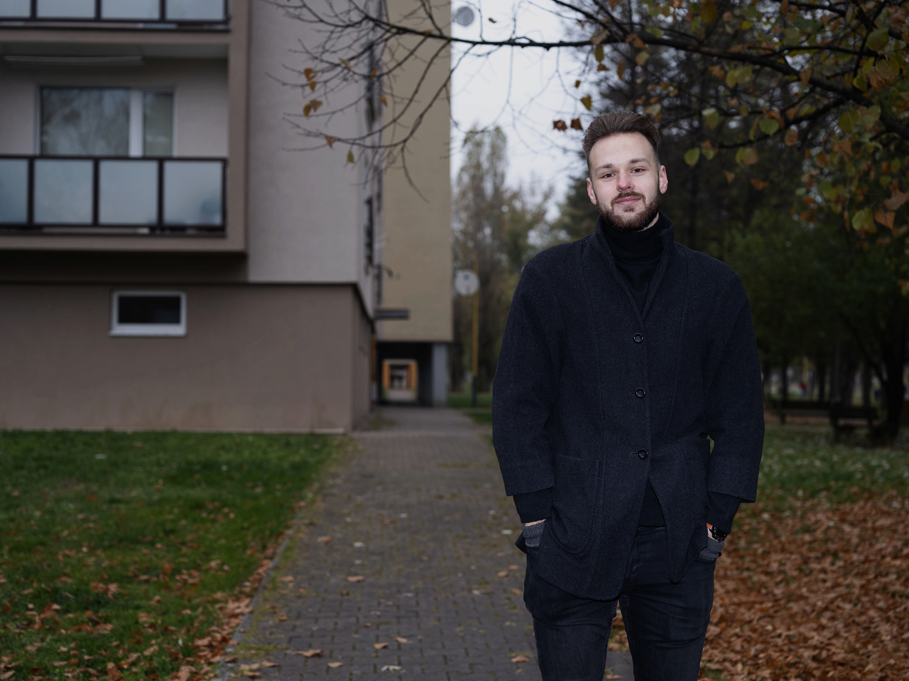
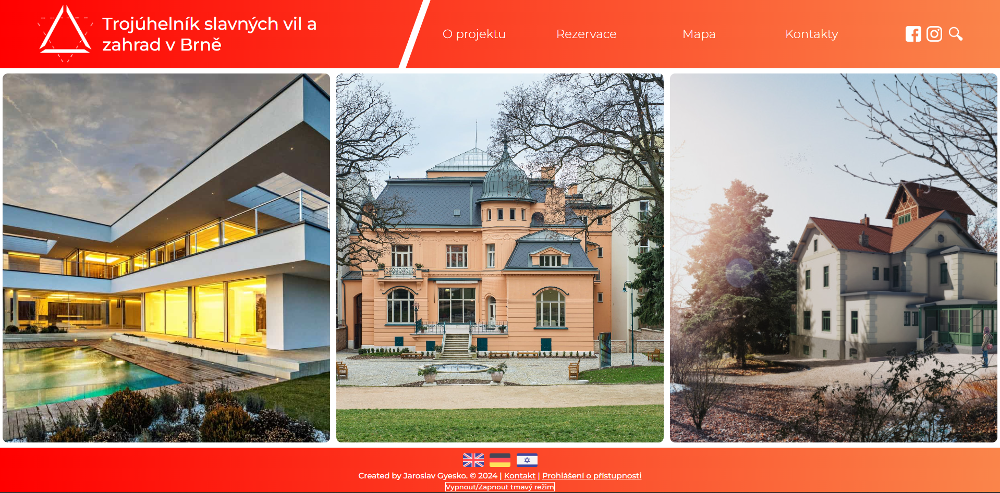

01
Hlavné oblasti
- Projektový manažment
- Facilitácia workshopov
- Copywriting a scenáre
PORTFÓLIO / 2026
Som Jaroslav Gyesko — projektový koordinátor a lektor. Prepájam projektový manažment, digitálny obsah, GIS a webové rozhrania pre verejnoprospešné, vzdelávacie a regionálne projekty.
Pozrieť projekty
MÔJ PROFIL
Som projektový koordinátor so vzdelaním v informačných systémoch verejnej správy a regionálnom rozvoji. Prepájam technické myslenie, koordináciu partnerov a digitálny obsah pre mestá, vzdelávanie a mládežnícke projekty.
OBLASTI
Projektový manažment
Webový a sociálny obsah
GIS a dátová vizualizácia
Informačná architektúra
01
02
03
VYBRANÉ PRÁCE
01 / GIS & DATA
Interaktívna mapa porovnávajúca školské dáta v obciach Košického samosprávneho kraja: počet žiakov a pomer žiakov na jedného učiteľa v rokoch 2010 a 2020.
02 / WEB & CULTURE
Návrh viacjazyčného prezentačného webu pre kultúrno-turistický projekt prepájajúci vily Tugendhat, Arnold a Löw-Beer v Brne.

03 / CONTENT & VIDEO
Scenáre a produkcia krátkych videí na sociálne siete pre projekt European Dialogue (11/2025 — 03/2026). Témy prepájajú aktuálne európske dianie, spoločenské otázky a mladé publikum.
AKTUÁLNE PÔSOBENIE
V Erasmus+ projektoch zabezpečujem logistiku, komunikáciu s partnermi a vedenie workshopov. Prepájam organizáciu, facilitáciu a cit pre obsah určený mladému publiku.